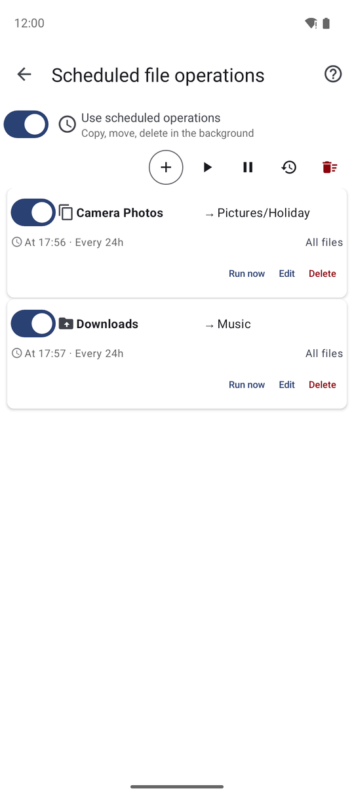
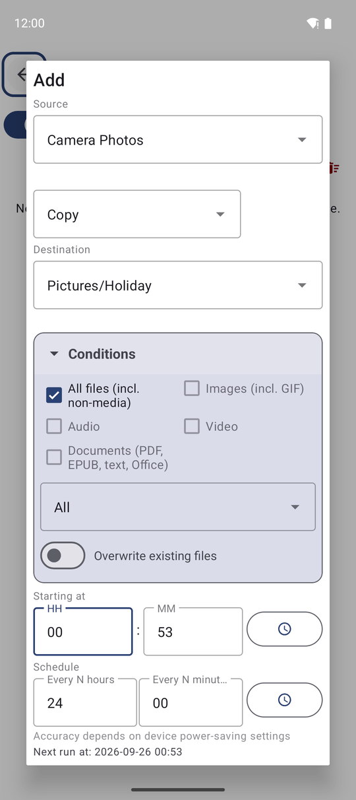
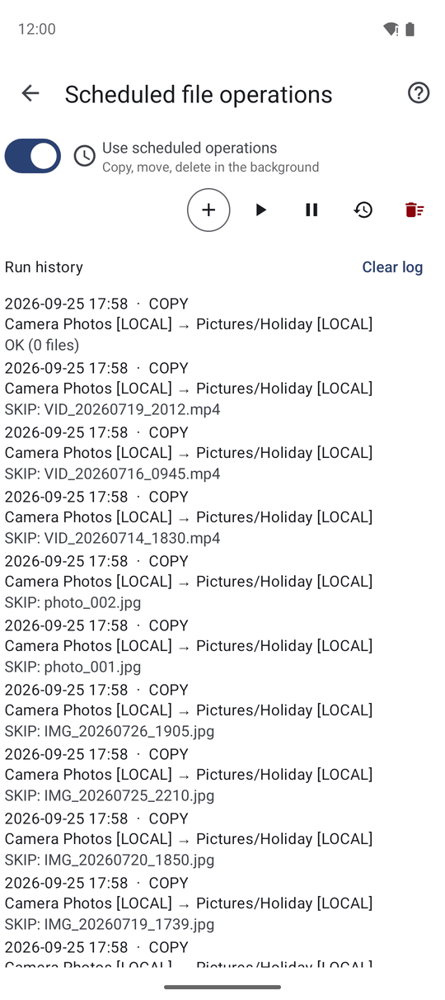

Выполнение операций с файлами по расписанию
Настройте автоматическое копирование, перемещение или удаление файлов по расписанию — например, еженощную выгрузку фото с камеры на домашний ПК — и просматривайте подробный журнал запусков, чтобы всегда быть в курсе выполненных задач.
Почему вам это понравится
Каждый вечер вы ставите телефон на зарядку и думаете: «Надо бы скопировать сегодняшние фото на компьютер». И каждый вечер забываете. Запланированная операция сделает это за вас: вы настраиваете задачу один раз — что брать, куда складывать и как часто, — а приложение выполняет её в фоновом режиме, даже если оно закрыто.
Типичные сценарии: копировать новые снимки камеры в сетевую папку каждую ночь, перемещать загруженные видеоролики на карту памяти каждые несколько часов или очищать папку временных скриншотов раз в сутки.
- ✓ FastMediaSorter в редакции Standard, noLegal, Legacy или VR.
- ✓ Источник: настроенный ресурс или любая локальная папка на устройстве.
- ✓ Для копирования и перемещения: назначение или любая папка на устройстве.
- ✓ Включённый телефон во время наступления расписания (Android управляет точным моментом пробуждения, поэтому задача может стартовать на несколько минут позже).
Открытие экрана запланированных операций
На экран Запланированные операции с файлами ведут несколько удобных путей:
- Настройки → Управление → Запланированные операции с файлами — «Управление операциями и журнал запусков».
- Меню встроенных программ и панель быстрого доступа, где модуль расписания находится среди остальных программ.
- Виджет Запланированные операции на домашнем экране Android.
- В файловом браузере: верхнее меню с тремя точками → Автоматизация.. — экран откроется с уже подставленной текущей папкой в качестве источника.
Вверху экрана переключатель Использовать операции по расписанию («Копирование, перемещение, удаление в фоне») активирует или полностью отключает всю службу.

Указание источника, действия и назначения
Нажмите + (Добавить). В параметрах новой задачи укажите:
- Источник — выберите один из ваших ресурсов или первый пункт Локальная папка для выбора любого каталога через системный диалог Android. Такая папка будет использоваться только этой задачей и не появится на главном экране.
- Операция — Копирование, Перемещение или Удаление.
- Назначение — для копирования и перемещения: выберите целевое назначение или пункт Локальная папка. При наличии ровно одного настроенного назначения оно подставится автоматически.
Если источник открыт только для чтения, приложение разрешит только операцию Копирование с подсказкой: «Источник доступен только для чтения».

Выбор типов файлов и расписания
- Типы файлов — Все файлы (вкл. немедиа), Изображения (вкл. GIF), Аудио, Видео или Документы (PDF, EPUB, текст, Office). Выбор «Все файлы» автоматически снимает остальные флажки. Как минимум один пункт должен быть активен.
- Временной фильтр — Все, Новые с прошлого запуска, Новые за последний час или Новые за последние сутки. Вариант Новые с прошлого запуска идеально подходит для сценария «копировать только то, что появилось со вчерашнего дня».
- Время начала — время первого запуска задачи.
- Повторять каждые — периодичность повтора в часах и минутах (по умолчанию каждые 24 часа). Минимальный интервал составляет 15 минут; нулевой интервал автоматически корректируется на 1 час.
Ниже строка Следующий запуск: динамически показывает точное расчетное время следующего срабатывания.
Дополнительные параметры и сохранение
- Перезаписывать существующие файлы — заменять одноимённые файлы в месте назначения (при выключенном тумблере такие файлы безопасно пропускаются).
- Отключить уведомления — выполнять фоновую работу бесшумно, без появления уведомлений в шторке.
Нажмите Сохранить операцию. При первой настройке приложение может предложить Разрешить работу в фоновом режиме: «На некоторых устройствах система может останавливать фоновые службы. Для надёжной работы операций по расписанию разрешите приложению работу без оптимизации батареи». Нажмите Открыть настройки и выдайте разрешение, иначе система может «усыпить» задачу при выключенном экране.
Чтобы стереть исходные файлы после перемещения или удаления в фоне, приложению требуется разрешение на доступ ко всем файлам. Если его нет, появится уведомление: «Запланированной операции требуется разрешение» — нажмите на него и подтвердите доступ.
Управление задачами, ручной запуск и журнал
Каждая операция в списке отображает источник, назначение и расписание («В 23:00 · Каждые 24ч») со своим переключателем паузы и кнопкой Запустить сейчас для мгновенного выполнения. Для управления всеми задачами разом предусмотрены кнопки Запустить все сейчас, Приостановить все и Возобновить все.
Нажмите Журнал, чтобы открыть историю запусков: когда выполнялась каждая задача, сколько файлов было обработано и какие ошибки возникли. Если последний запуск завершился ошибкой, задача помечается предупреждением: «Последний запуск не удался. Нажмите Журнал для подробностей».
Задачи автоматически продолжают работать и после перезагрузки телефона. Если открытая в файловом браузере папка изменилась в результате работы фоновой задачи, список мгновенно обновится при возвращении на экран.

Что вы получите
Ваши фотографии каждую ночь автоматически выгружаются на домашний компьютер без единого напоминания, папка загрузок остаётся чистой, а утренний журнал наглядно показывает всё, что было сделано.
Советы и решение проблем
- Главный тумблер ориентируется на список. На экране запланированных операций переключатель автоматически выключается при пустом списке и включается обратно, как только вы добавляете задачу.
- Начинайте с копирования. Попробуйте новую задачу в режиме копирования день-два; переключайте на перемещение, когда убедитесь в точности настроек.
- Сетевой ресурс должен быть включён в момент запуска — для домашнего компьютера задавайте ночные часы, когда он активен.
- Хотите проверить работу сразу? Нажмите кнопку Запустить сейчас и загляните в Журнал.